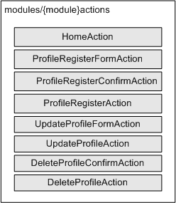
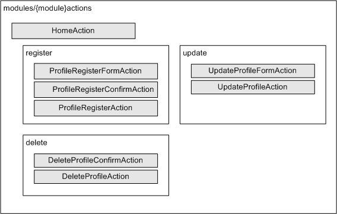

戻る
最終更新日: 2010 年 1 月 22 日
アクションのパッケージ化
通常、作成したアクションクラスは下図のように modules/{module}/actions (コンソールアクションの場合は console/actions) ディレクトリに配置する必要があります。

このディレクトリ下にあるアクションはオートローダにより自動的にフレームワークにより読み込まれるのですが、クラス数が増えてくると途端に管理が厄介になります。
こういった場合は機能ごとにディレクトリを作成し、アクションクラスの再配置を行いましょう。

上記例を元に解説すると、HomeAction は actions の直下に配置、登録周りは register、更新周りは update、削除周りは delete といったように、機能ごとにディレクトリを作成してその中に該当するアクションを配置しています。
オートローダは階層化されたディレクトリを解析し、リクエストに合致したアクションを読み込みます。delta ではこのようなアクションの階層化をパッケージ化と呼んでおり、パッケージごとに特定のフィルタを実行するといった機能も備わっています。(フィルタを使う - パッケージフィルタ機能 の項を参照)
尚、アクションクラスの構成をパッケージ化した場合、対応するビヘイビアもアクションディレクトリと同様の構成に統一する必要があります。(コンソールアクションを除く)
例えば、actions/register/ProfileRegisterFormAction.php に対応するビヘイビアは、behaviors/register/ProfileRegisterForm.yml となります。behaviors ディレクトリの直下にファイルを置いても参照されない点に注意して下さい。
- ※1: パッケージは多重に階層化されたディレクトリにも対応します。
- ※2: アクションが所属するパッケージ名は、アクションクラス内から $this->getPackageName() メソッドをコールすることで取得可能です。(Delta_ActionStack::getInstance()->getLastEntry()->getPackageName() メソッドでも取得可能)
- ※3: 複数のパッケージ間で同一のアクション名が見つかった場合、どちらのファイルが読み込まれるかは保証されていません。